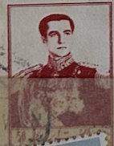
| SOURCE | TITLE| IMAGE MATCH | click to source page |
| Etsy | Antique Coronation Hanky Edward V111 - Etsy Australia | 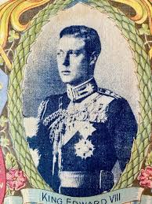 |
| Mesa Stamps | Shah Pahlavi | 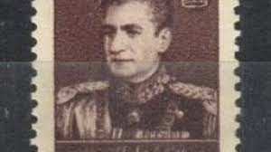 |
| eBay | Kitschbild Guérin Boutron Unsortiert Nr. 318 | eBay | 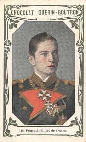 |
| Goodluck Rugs | 1′8″W x 2′3″H Handmade Wool and Silk MOHAMMAD REZA PAHLAVI SHAH Persian Tableau Rug Tapestry Wall Hanging 12980862 – Goodluck Rugs | 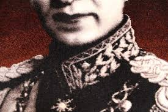 |
| eBay | Playing Cards 1 Single Card Old Vintage * KING EDWARD VIII * Royal Art Picture D | eBay | 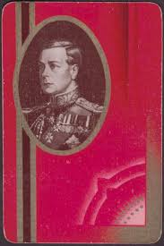 |
| Etsy | Antique Coronation Hanky Edward V111 - Etsy | 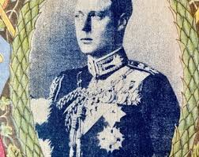 |
| Invaluable.com | Sold at Auction: Encyclopedia of Romania, 1938 | 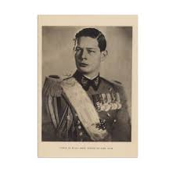 |
| eBay | Postcard Portrait of General Antonio Lopez De Santa Anna | eBay | 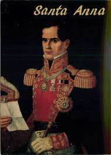 |
| eBay | Chromo Guérin Boutron No. 318 - Prince Adalbert Of Prussia | eBay | 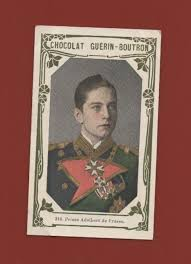 |
| Redbubble | "Persian shah - Persian (iran) design" Sticker by Elbenj | Redbubble | 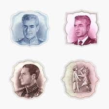 |
| eBay | UNIQUE GREEK HELLENIC ROYALTY FRAME PHOTOGRAPH KING CONSTANTINE B UNIFORM | eBay | 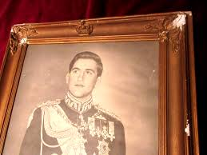 |
| eBay | HONG KONG 1992 PRESTIGE BOOKLET CONSISTING OF 35 PAGES WITH STAMP BOOKLETS OF | eBay | 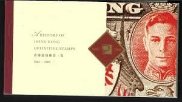 |
| Amazon.com | Amazon.com: Belgium 900B unmounted Mint/Never hinged ** MNH 1951 Leopold (Stamps for Collectors) : Toys & Games | 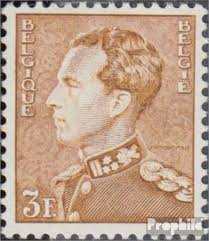 |
| eBay | Constantine XIII - Print by International Portrait Gallery - Vintage L1124E | eBay | 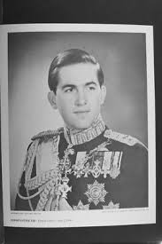 |
| Etsy | 20 Rials 1958 Pahlavi Note Pahlavi Gem Uncirculated (UNC) - Etsy | 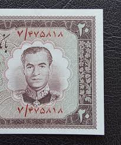 |
| eBay | Royalty King Alfonso XIII from Spain Vintage Postcard B179 | eBay | 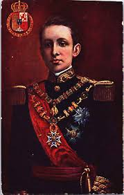 |
| eBay | UNC 1964 GREECE 30 DRACHMAE ΔPAXMAI .835 SILVER COIN KM#87 # 0791 | eBay | 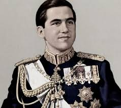 |
| eBay | Alphonse XIII King Spain State Visit to Paris Assassination Attempt Postcard -N1 | eBay | 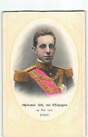 |
| Media Storehouse | Black and White Print of King Umberto of Italy. Art Prints, Posters & Puzzles from Fine Art Finder | 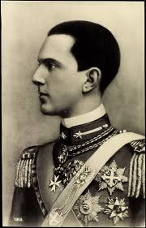 |
| eBay | Royal Compound (Union) Greece & Greek King Constantine Crown Keychain Keyring A2 | eBay | 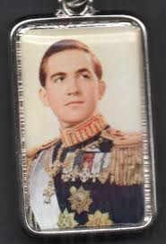 |
| Etsy | Antique Coronation Hanky Edward V111 - Etsy Canada | 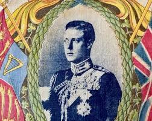 |
| Amazon.sg | Alexis in America: A Russian Grand Duke's Tour, 1871-1872 : Farrow, Lee A.: Amazon.sg: Books | 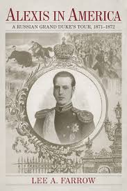 |
| eBay | KING UMBERTO OF SAVOY in uniform antique printed autograph photo postcard | eBay | 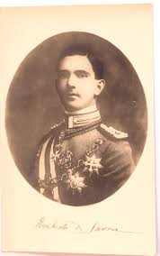 |
| eBay | 1910's ITC Silk ALBERT,King Of Belgium Rulers With Flags | eBay | 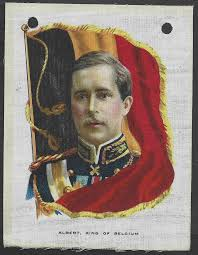 |
| eBay | Vintage Postcard King Alfonso XIII of Spain | eBay | 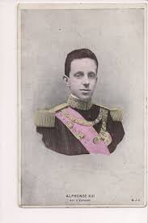 |
| eBay | Southern Rhodesia / Fiji: King George VI Vignette Die * Proof * Graded by PMG * | eBay | 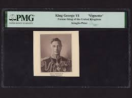 |
| eBay | King Savang Vatthana -PERFORATED- (MNH) | eBay | 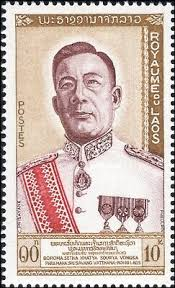 |
| Etsy | Antique Coronation Hanky Edward V111 - Etsy | 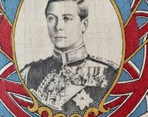 |
| eBay | Greece. Constantine B', King of the Hellenes, Greek Old Photo Years 1964 - 1973 | eBay | 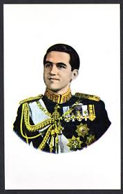 |
| eBay | Monaco - "ROYALTY ~ PRINCE RAINIER III" Max Card 1950 ! | eBay | 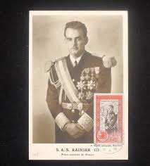 |
| eBay | ROYALTY KING OF GREECE GEORGE B' MEDALS PHOTO LITHOGRAPHY BY BOUCAS 1930's RARE | eBay | 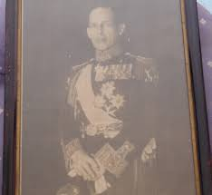 |
| Invaluable.com | Sold at Auction: PAHLAVI MOHAMMAD REZA: (1919-1980) | 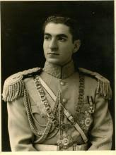 |
| eBay | Playing Cards 1 Single Card Old Vintage * KING GEORGE VI * Royal Art Portrait C | eBay | 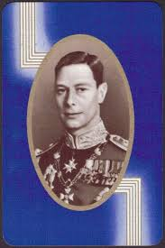 |
| LaBarre Galleries | Antonio Lopez de Santa Anna Autograph | 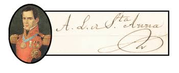 |
| eBay | George VI royalty antique photo by Dorothy Wilding | eBay | 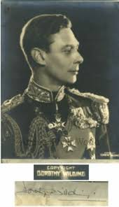 |
| eBay | Greece - King Paul I - MAXIMUM CARD - Publ. unknown | eBay | 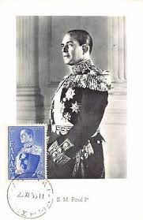 |
| eBay | s4512/ Canada Poster Stamp Label # King George VI visit 1939 | eBay | 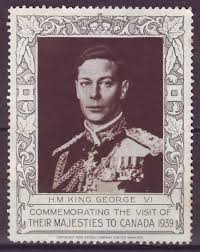 |
| Redbubble | Persian shah - Persian (iran) design" Sticker by Elbenj | Redbubble | 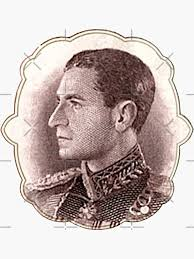 |
| Todocolección | o) 1962 iran, sugar refinery khuzistan, sct 1 - Buy Antique stamps of Iran on todocoleccion | 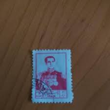 |
| eBay | 1959 Jose de San Martin, Champion Sc 1126 FDC with Cachet Craft - Ken Boll (K09 | eBay | 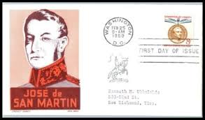 |
| eBay | SET OF OLD POSTCARDS: PRINCE RAINIER III OF MONACO PRINCE RAINIER POSTAGE STAMPS | eBay | 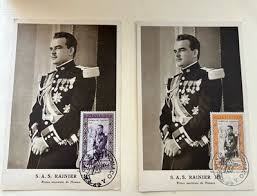 |
| eBay | 1959 Jose de Sam Martin FDC - Blue Boll Cachet - D16 | eBay | 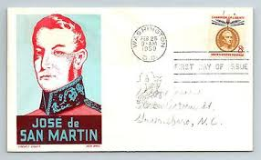 |
| eBay | SPAIN 368 - League of Nations 5th Assembly "King Alfonso XIII" (pa10946) | eBay | 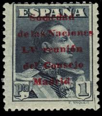 |
| eBay | SPAIN #343 Mint NH - 1922 4p Lake, Alfonso | eBay | 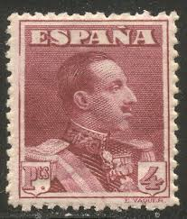 |
| eBay | Laos set 70 - 73 MH OG | eBay | 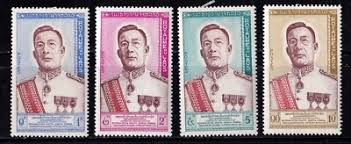 |
| eBay | 1930 press photo Crown Prince Italy Umberto II | eBay | 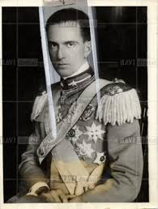 |
| eBay | Vintage Postcard Prince of Piedmont King Umberto II of Italy | eBay | 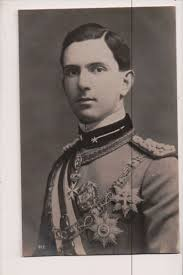 |
| eBay | 1905 Paris portrait King Alphonse XIII royalty Spain stamp postcard | eBay | 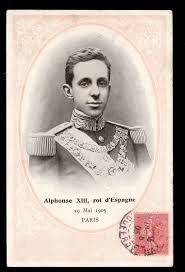 |
| eBay | ROSS DEPENDENCY SCOTT L6 MNH BLOCK/4 - 1967 3c DK CARMINE ISSUE CAT $48 | eBay | 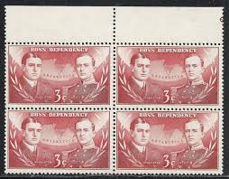 |
| eBay | SPAIN, YV # TELEGRAPHS 62 A, M NO GUM | eBay | |
| eBay | 13) Belgium Carte Maximum Card Royalty Leopold 1934 | eBay | |
| eBay | RARE ORIGINAL PROOF ENGRAVING OF KING GEORGE VI IN UNIFORM BY CAMPBELL N.Y. | eBay | |
| eBay | RARE MONACO 1963 PRINCE RAINIER THE THIRD 34TH BIRTHDAY COMMEMORATIVE POSTCARD | eBay | |
| eBay | Vintage Postcard King Alfonso XIII of Spain | eBay | |
| Invaluable.com | Sold at Auction: Constantine II of Greece | |
| eBay | ARTISANATS IRANIENS 1958 IRANIAN ARTS BOOKLET IN FRENCH | eBay | |
| eBay | 1931 Guinea Edifil 215S** MNH Catalog 85 Euros | eBay | |
| eBay | Vintage photo postcard El rei d Manoel de generalissimo king Portugal 1908 BK1 | eBay | |
| eBay | LAOS SCOTT 70 - 73 MH SET - 1962 KING SAVANG VATTHANA ISSUES | eBay | |
| eBay | Vintage 1937 BRITISH EMPIRE Photo Trade Card KING GEORGE VI | eBay |